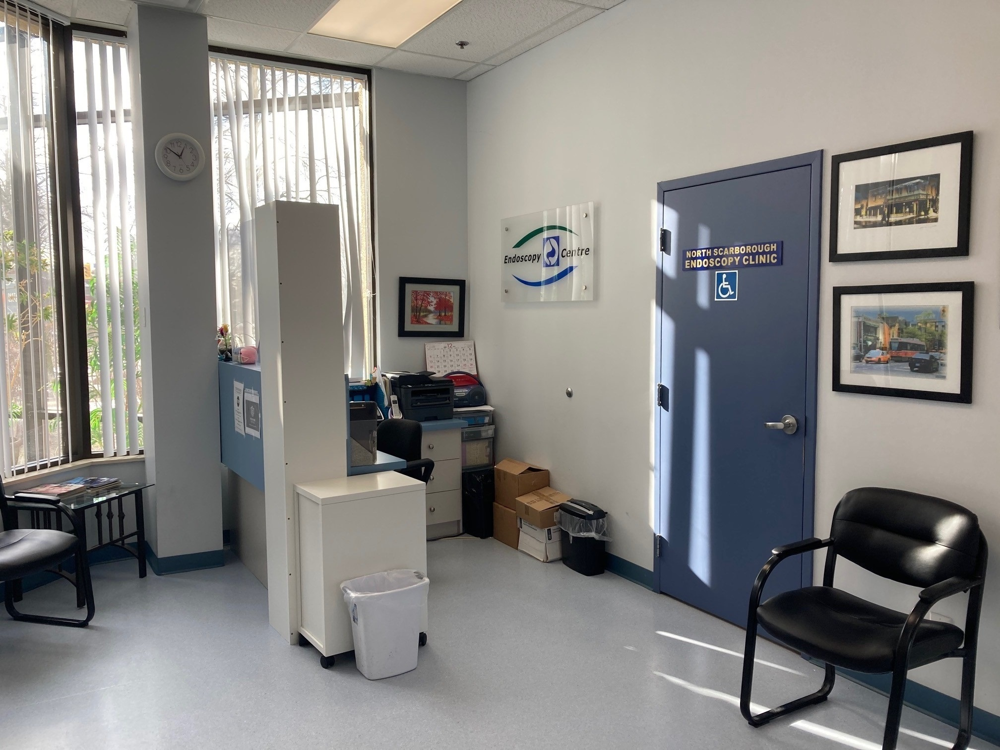

About Us
North Scarborough Endoscopy Clinic (NSEC) was founded in 2005 to help patients in Scarborough, Markham, and North York gain access to much needed endoscopic evaluation and care for their digestive issues.
We are a modern, state-of-the-art out-patient clinic providing a full range of upper endoscopy (gastroscopy and push enteroscopy) and colorectal procedures.
We strive to provide excellent endoscopic services and complete follow-up care for our patients.
Meet the NSEC Doctors
Dr. Timothy Devlin, MD, FRCPC
- University of Toronto Graduate
- Medical School, Internal Medicine Residency and Gastroenterology Fellowship - U of T
- 35 years at Scarborough Birchmount Hospital, now part of the Scarborough Health Network
- Practice Areas of General Gastroenterology and Internal Medicine. Diagnostic and Therapeutic Endoscopy at SHN and NSEC
Dr. Gerald Chan, MB, FRCPC
- University of Hong Kong Medical School Graduate (1980)
- Internal Medicine, Gastroenterology and Hepatology in Hong Kong, London, UK (Royal Free Hospital Liver and GI Unit), University of Washington (Seattle) - GI Department
- Special interest in Interventional Endoscopy and Hepatology
- 25 years at Scarborough Birchmount Hospital (SHN)
- Languages: Cantonese, Mandarin (Putonghua) and English
Dr. Winnie Leung, MD, FRCPC
- Queen's University Medical School Graduate
- General Surgery Residency - Queen's University
- Colorectal Surgical Fellowship - University of Pennsylvania
- 21 years at Scarborough Birchmount Hospital (SHN)
- Special interest in Colon and Rectal problems and Breast Cancer
- Languages: English and Cantonese
Dr. Vincent Thien, MD, FRCPC
- University of British Columbia Medical School Graduate
- Internal Medicine and Gastroenterology Fellowship - U of T
- 16 years at Scarborough Birchmount Hospital (SHN)
- Current GI Division Lead for Scarborough Health Network
- Special interest in General Gastroenterology and Hepatology, and Medical Education (U of T)
- Languages: English
Dr. Jason Reinglas, MD, FRCPC
- University of Ottawa Medical School Graduate
- Internal Medicine and Gastroenterology Fellowship - University of Ottawa
- Fellowship in Inflammatory Bowel Disease - McGill University
- Hospital Privileges at Scarborough Health Network
- Languages: English and French